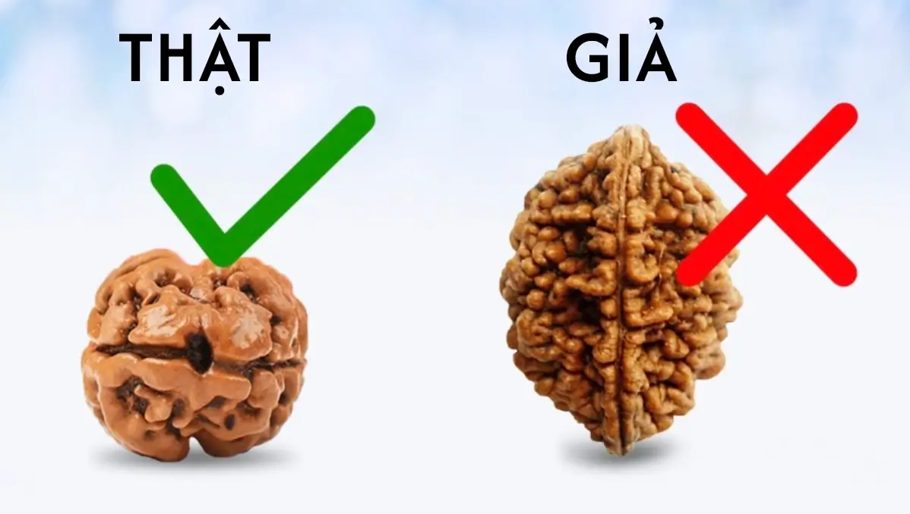

Trong bối cảnh thị trường đầy ắp hàng giả, đồ nhái và sản phẩm kém chất lượng, người tiêu dùng ngày càng phải đối mặt với thách thức trong việc lựa chọn sản phẩm phù hợp và đáng tin cậy. Vấn đề này không chỉ ảnh hưởng đến sức khỏe khi mua sản phẩm giả mạo mà còn đặt ra những thách thức đối với lĩnh vực tâm linh, nơi mà sản phẩm như hạt Rudraksha giả có thể ảnh hưởng đến phong thủy, vượng khí và sự tôn nghiêm.
Hạt Kim Cang được làm từ hạt cây Rudraksha, nguyên liệu không luôn sẵn có và không thể sản xuất hàng loạt. Do đó, với nhu cầu lớn và mong muốn lợi nhuận cao, nhiều người cố tình sản xuất tràng hạt giả, thậm chí làm thành vòng tay, chuỗi hạt cao cấp để đánh lừa người tiêu dùng.
Ngoài ra, đôi khi nhu cầu về một số hạt Rudraksha có nhiều khía (Mukhi) hơn cũng tăng lên trong thời gian này để kiếm tiền. Một số nhà cung cấp vô đạo đức đã khắc thêm khía vào các hạt Rudraksha thấp hơn và bán chúng với giá cao hơn.
Chế Tạo Từ Nhựa Cây
Sử dụng nhựa cây kết hợp với các chất liệu tạo màu để tạo ra hạt Rudraksha và thường được áp dụng để làm giả các chuỗi hạt có số lượng hạt nhiều. Kỹ thuật này giúp sản phẩm giả mạo trông rất giống với tràng hạt bồ đề thật.
Nhuộm Màu Bằng Chất Liệu Rẻ Tiền
Sử dụng các chất liệu rẻ tiền để nhuộm màu, thả vào dung dịch hóa màu để tạo ra màu sắc các hạt có vẻ nâu đen, vàng, hoặc bạc, giống như tcác hạt tự nhiên.
Sử dụng Badraksh thay thế
Hạt Rudraksha còn được làm giả từ một loại hạt khác được biết đến là Badraksh. Khi quan sát cả hai loại hạt này trông rất giống nhau, khó có thể phân biệt bằng mắt thường. Sự khác biệt giữa chúng chỉ trở nên rõ ràng khi bạn cầm nó trên tay, và nếu bạn có sự nhạy cảm, bạn mới có thể nhận khác biệt. Do đó, chúng tôi khuyên tất cả mọi người chỉ nên mua hạt từ một nhà cung cấp đáng tin cậy.
Tại Rudraksha.vn quí khách hàng có thể an tâm mua sắm các sản phẩm từ hat kim cang do chúng tôi nhập khẩu hàng chính hãng 100% từ Ấn Độ, có giấy tờ xác minh rõ nguồn gốc.
Ngày nay có rất nhiều phương pháp xác định được Rudraksha thật hay giả, tuy nhiên có một số cách có thể đưa ra kết quả rõ ràng một số cách thì không hoặc thậm chí làm sai cách có thể làm ảnh hưởng đến Hạt Kim Cang. Vì vậy cùng Rudraksha.vn tìm hiểu các cách xác định được Rudraksha thật hay giả từ truyền thống đến hiện đại nha.
Thử nghiệm X-Ray là thử nghiệm kết luận duy nhất để xác định Rudraksha nguyên bản. Đây là bài kiểm tra duy nhất mà bạn có thể biết Rudraksha là nguyên bản, giả mạo hay bị chế tác.Tia X giúp tìm hiểu xem Rudraksha có chứa các khía bằng nhau như Mukhi hay không
Hãy hiểu rằng, một hạt Rudraksha phải có số khía bằng với các Mukhis trên bề mặt của nó và nó cũng phải có một hạt ở mỗi khía. Tuy nhiên, đôi khi Rudraksha chưa phát triển đầy đủ và tất cả các hạt có thể không nhìn thấy được trong X-Ray do hạt quá mỏng, nhưng các khíavẫn còn đó. Ví dụ: nếu bạn chụp X-Ray của Mukhi Rudraksha 15, hạt thật sẽ có 15 khía và 15 hạt nhưng nếu hạt Rudraksha không phát triển hoàn chỉnh thì nó sẽ hiển thị 15 khía nhưng có thể không nắm bắt rõ ràng tất cả các hạt. hạt vì một số hạt có thể quá mỏng. Do đó, bạn nên mang X-quang đến gặp một “chuyên gia” để được hướng dẫn thêm.
Thường các loại hạt sẽ có 3 màu sắc là đen, vàng và bạc. Phần lớn màu tối xám, không sáng, đường vân ngẫu nhiên và hiện rõ. Còn hạt giả, do được làm bằng nhựa cây hoặc nhuộm phẩm màu nên màu sắc sáng hơn, cầm trong tay cảm giác nhẹ hơn khi nhìn kĩ các đường vẫn sẽ thấy nhiều vân nhỏ bị mờ và không rõ.
Theo truyền thống người ta sử dụng một hạt Rudraksha để giữa hai đồng xu nếu hạt Rudraksha là thật bạn sẽ thấy hạt tự có chuyển động quay tròn chính giữa 2 đồng xu. Khi đó nếu vùng năng lượng xung quanh tích cực hạt sẽ quay theo chiều kim đồng hồ, nếu tiêu cực sẽ quay ngược chiều kim đồng hồ.
Do hạt Rudraksha là chất liệu gỗ, nên sẽ thấm nước, khi thả vào nước, mang lên lau qua giấy vải vẫn sẽ thấy hạt còn dính nước, đổi màu thẫm. Còn hạt được làm bằng nhựa, nên sẽ không thấm nước, nhúng nước xong lau khô là sẽ khô ngay.
Ngoài ra người ta cho rằng khi bỏ hạt này vào trong nước hạt Rudraksha thật sẽ chìm và hạt giả sẽ nổi lên, nhưng đây không phải là phương pháp kiểm tra chính xác. Hạt Rudraksha thật có thể nổi hoặc chìm tùy thuộc vào nhiều yếu tố khác nhau bao gồm cả mật độ và độ ẩm của hạt.
Nhìn chung đây không hoàn toàn là phương pháp chính xác và không thể thay thể cho các phương pháp kiểm tra chuyên sâu hơn như kiểm bằng tia X.
Rudraksha.vn tự hào là địa chỉ đáng tin cậy cung cấp các loại hạt Rudraksha chất lượng cao chính hãng được nhập từ Trung tâm Rudra của Ấn Độ. Tại Rudraksha.vn chúng tôi cung cấp đa dạng loại hạt Hạt Kim Cang được lựa chọn kỹ lưỡng và kiểm tra tính xác thực trong môi trường phòng thí nghiệm.
Tất cả hạt Rudraksha, bất kể xuất xứ từ Java hay Nepal, đều được kiểm tra kỹ lưỡng để đảm bảo chúng khỏe mạnh, nặng nề, bóng mượt và đầy năng lượng. Đội ngũ chuyên gia tuyển chọn nội bộ của chúng tôi đã được đào tạo chuyên sâu để đảm bảo chất lượng tốt nhất sẵn sàng hỗ trợ và tư vấn cho những ai quan tâm đến Rudraksha.